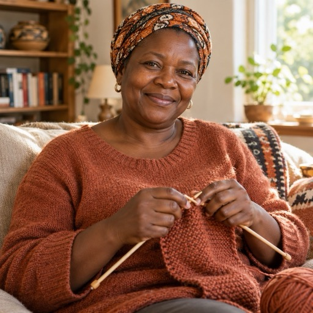

Hello! What are you knitting today?
I know every pattern, every size and every row of your Knitter's Atlas. Ask me anything, send me a photo, or tap one of these questions:

KMThe Knitter's Atlas
I know every pattern, every size and every row of your Knitter's Atlas. Ask me anything, send me a photo, or tap one of these questions:
AI assistant. It can make mistakes: check the pattern in your Atlas before buying lots of yarn. Knitting help only, not medical, legal or financial advice. For baby, children's and pet knits always follow the safety notes.